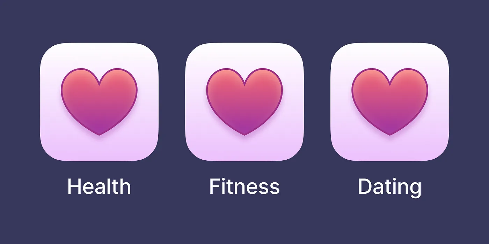

How Text Affects the Meaning of UI Icons
August 13, 2023
Introduction
When you create icons for the user interface of an app, you should remember that the icon should be easy to read. The user should grasp the meaning of an icon in a few milliseconds and understand the meaning correctly. Otherwise, it will lead to confusion.
A good designer should remember that the meaning of the same icon can be changed by its label.
By reading the label, the user creates a meaning that affects what we see when we look at the icon.
The same icon as a heart could mean something about health, fitness or a dating.

So try not to use icons without labels (if possible). And remember that the label determines the meaning of an icon.